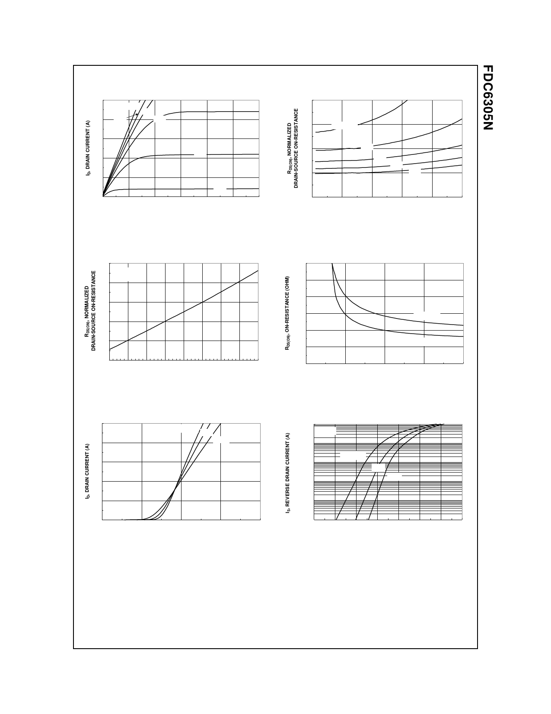

Typical Characteristics
10
VGS = 4.5V
3.0V
8
3.5V
2.5V
6
2.0V
4
2
1.5V
0
0
0.5
1
1.5
2
2.5
3
VDS, DRAIN TO SOURCE VOLTAGE (V)
Figure 1. On-Region Characteristics.
1.6
ID = 2.7A
VGS = 4.5V
1.4
1.2
1
0.8
0.6
-50 -25
0
25
50
75 100 125 150
TJ, JUNCTION TEMPERATURE (oC)
Figure 3. On-Resistance Variation
with Temperature.
10
VDS = 5V
8
TA = -55oC 25oC
125oC
6
4
2
0
0
1
2
3
4
VGS, GATE TO SOURCE VOLTAGE (V)
Figure 5. Transfer Characteristics.
1.6
1.4
VGS = 2.5V
1.2
3.0V
3.5V
4.0V
1
4.5V
0.8
0
2
4
6
8
10
ID, DRAIN CURRENT (A)
Figure 2. On-Resistance Variation
with Drain Current and Gate Voltage.
0.24
0.2
ID = 1.4A
0.16
0.12
0.08
0.04
TA = 125oC
TA = 25oC
0
1
2
3
4
5
VGS, GATE TO SOURCE VOLTAGE (V)
Figure 4. On-Resistance Variation
with Gate-to-Source Voltage.
10
VGS = 0V
1
0.1
0.01
TA = 125oC
25oC
-55oC
0.001
0.0001
0
0.2
0.4
0.6
0.8
1
1.2
1.4
VSD, BODY DIODE FORWARD VOLTAGE (V)
Figure 6. Body Diode Forward Voltage
Variation with Source Current
and Temperature.
FDC6305N, Rev. C